ดาบดาบทั้งหมด 42 ชิ้น เรียงตามเลเวลชื่อLvATKธาตุได้จาก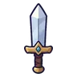ดาบนักเดินทาง145ไม่มีธาตุอาวุธเริ่มต้นของสาย (ได้ตอนเปลี่ยนอาชีพ)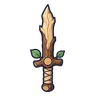ดาบกิ่งไม้140ไม่มีธาตุค้างคาวแม่รัง 0.25%ดาบสั้นทองแดง850ไม่มีธาตุนกกระเต็นดำน้ำ 0.25%ดาบฟักทอง1046ดินฟักทองจอมซน 0.12%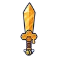ดาบน้ำผึ้ง1246ไม่มีธาตุสไลม์น้ำผึ้ง 0.12%ดาบเรเปียร์เหล็กในผึ้ง1544ลมผึ้งยักษ์ 0.06%ดาบขนอีกา1846มืดอีกาขโมยข้าวโพด 0.12%ดาบก้ามปู2044น้ำปูก้ามโตลำธาร 0.06%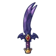ดาบเขี้ยวคู่ราชาค้างคาว2260มืดราตรีราชาค้างคาว 0.5%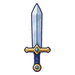ดาบอัศวินเหล็กกล้า2680ไม่มีธาตุอัศวินกระดูก ร่างสนิมแดง 0.25%ดาบกระดองเต่า3074ดินเต่าตะไคร่ขี้โมโห 0.12%ดาบโค้งกระดูกซี่โครง3284ไม่มีธาตุโครงกระดูกทหาร 0.25%ดาบมีดปังตอผ้าปะ3474มืดซอมบี้ชาวนา 0.12%ดาบแทงปีกแมลงปอ3674ลมแมลงปอไพลิน 0.12%ดาบหางแมงป่อง3870ไฟแมงป่องแดง 0.06%ดาบเรียวรากหลุมศพ4077มืดบอสผู้ถูกรากสิงดาบอสรพิษหนองน้ำ4070พิษงูหนองพิษ 0.06%ดาบดวงไฟวิญญาณ4270วิญญาณผีดวงไฟ 0.06%ดาบลมหมุน4474ลมภูตลมหมุน 0.12%ดาบทหารมด4686ดินมดทหาร 0.25%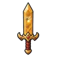ดาบอำพันนางพญามด5096ดินรังนางพญามด 0.5%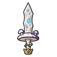ดาบหมวกเห็ดราชา5096พิษราชาเห็ดเรืองแสง 0.5%ดาบเหล็กจันทรา52110ไม่มีธาตุลูกน้องแคนเดิล 0.25%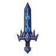ดาบมงกุฎราชาสุสาน55132มืดบัลลังก์ราชาสุสาน 0.5%ดาบอัศวินกระดูก56112มืดอัศวินกระดูก 0.25%ดาบคางคกพิษ58102พิษคางคกพิษ 0.12%ดาบแก้วภูเขาไฟ60114ไฟซาลาแมนเดอร์ 0.25%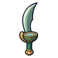ดาบโค้งกัปปะ6297น้ำกัปปะหนองหมอก 0.06%ดาบเกล็ดซาลาแมนเดอร์6497ไฟซาลาแมนเดอร์ 0.06%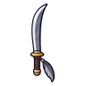ดาบโค้งนกกระสาเงา66102มืดนกกระสาเงา 0.12%ดาบผ้าคลุมหมอก6897มืดภูตหมอกเงา 0.06%ดาบกรงเล็บแร็พเตอร์72102ลมแร็พเตอร์ใบไม้ 0.12%ดาบเหล็กดวงดาว76140ไม่มีธาตุผู้จุดตะเกียงรุ่นแรก ร่างทอง 0.25%ดาบเปลือกด้วงแรด80144ดินด้วงแรดยักษ์ 0.25%ดาบไม้ต้นไม้โบราณ82130ดินต้นไม้ยักษ์โบราณ 0.12%ดาบเกล็ดหนอนลาวา84146ไฟหนอนลาวา 0.25%ดาบส้อมอิมป์86124ไฟอิมป์เปลวไฟ 0.06%ดาบตาพายุ88130ลมเทอโรซอร์ 0.12%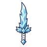ดาบเขี้ยวน้ำแข็ง90124น้ำแร็พเตอร์ใบไม้ ร่างขนนก 0.06%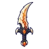ดาบเขี้ยวมังกรลาวา92170ไฟหัวใจมังกรลาวา 0.5%ดาบสุริยุปราคา92124มืดอีกาเงา 0.06%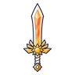ดาบรุ่งอรุณ95185ศักดิ์สิทธิ์ดรอปทั่วโลก Lv 90+